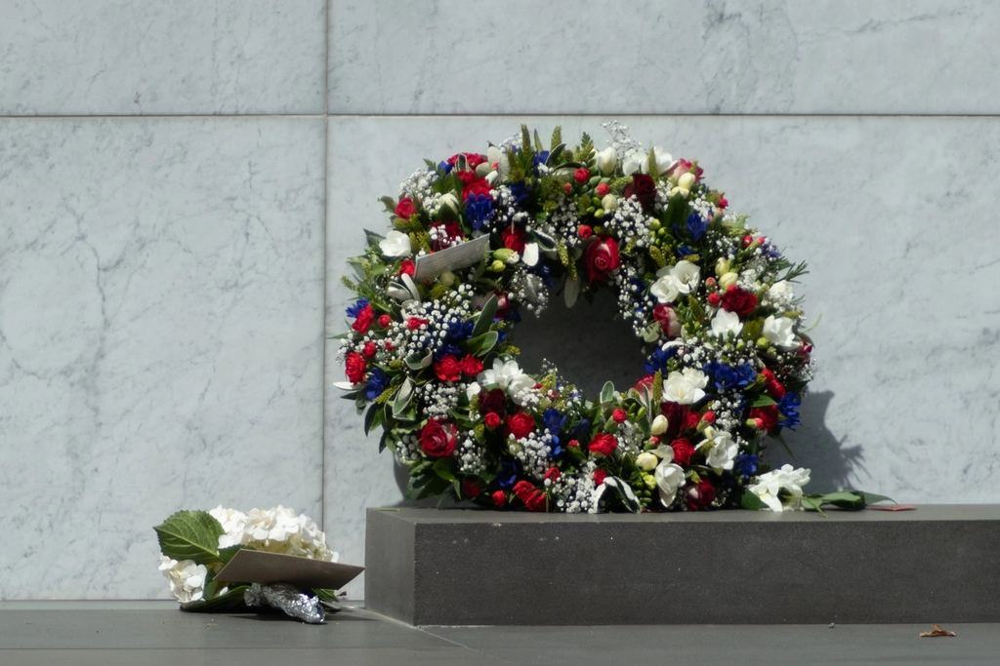
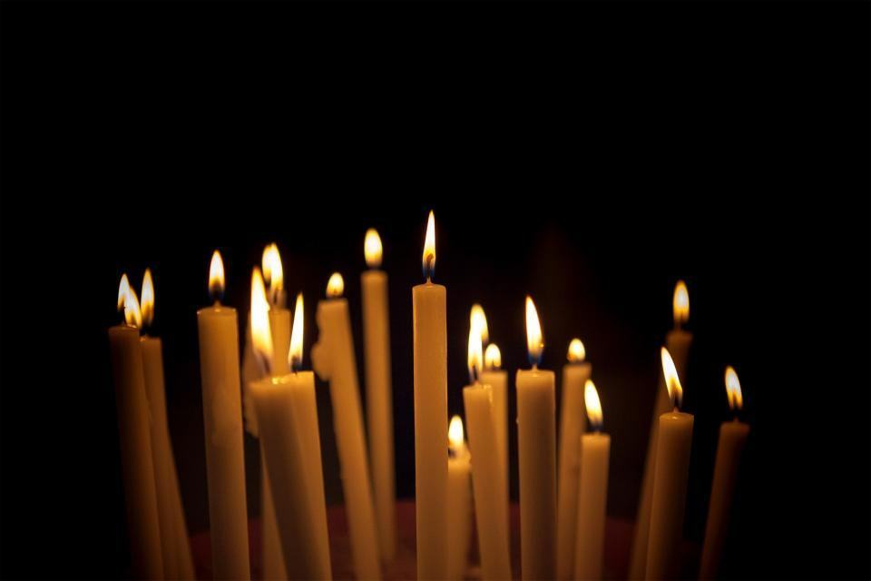

Tjänster
I dag är vi tre: Klara, stenhuggargesällen Anton Sjöqvist och formgivaren Nora Al-Hassan, som kom till oss 2023. Vi tar ett sextiotal uppdrag om året och ritar varje bokstav för det rum, den sten och det avstånd den ska läsas på.
Vad ska stå i stenen?

Gravstenar kring texten
De flesta som kommer till oss vill ha en gravsten där texten är det viktigaste. Vi börjar med namnet och orden, ritar dem i full skala och väljer sedan sten och form som passar bokstäverna.
Skisserna är gratis, och ni behöver inte bestämma er förrän ni har sett texten i rätt storlek.

Offentliga inskriptioner
Minnesstenar, citat i torgytor och namn på byggnader, ofta i samarbete med konstnärer och arkitekter. Vi tar fram typografin, provhugger en bokstav och hugger sedan på plats eller i ateljén.
Det största vi har gjort är 38 meter text längs en kajkant.

Hem och gård
Husnummer, gårdsnamn och årtalsstenar vid infarten. En handhuggen siffra syns på ett annat sätt än en gjuten – skuggan i v-snittet förändras med solen.
Husnummer i kalksten levereras på sex till åtta veckor.

Kurser och föredrag
Varannan helg på våren och hösten håller vi kurser för fyra deltagare. Du ritar en egen bokstav på lördagen och hugger den i kalksten på söndagen.
Vi föreläser också för arkitekter och kyrkogårdsförvaltningar om typografi i sten.
Från ord till v-snitt
- 1

Samtal och ord
Vi träffas i ateljén eller hemma hos er och pratar om vem eller vad stenen handlar om och vilka ord som ska stå.
- 2

Skiss i full skala
Klara ritar texten för hand i verklig storlek. Ni får se den på papper mot stenen innan något huggs.
- 3

Provbokstav
En bokstav huggs i en restbit av samma sten, så att ni kan se djup, skugga och yta.
- 4

Huggning och montering
Texten huggs med mejsel och klubba, ungefär tjugo bokstäver om dagen. Anton monterar på plats.
Gesäll, konstnär och försäkrad
- Gesäll i ateljénAnton Sjöqvist har gesällbrev i stenhuggeri utfärdat av Hantverksrådet.
- Konstnärernas RiksorganisationKlara är medlem i KRO och arbetar efter MU-avtalet vid offentliga uppdrag.
- MonteringsansvarAlla gravstenar monteras med dymling och fundament enligt kyrkogårdens föreskrifter.
- Försäkrad för offentlig markFöretaget har ansvarsförsäkring för arbete på kyrkogårdar, fasader och offentlig mark.